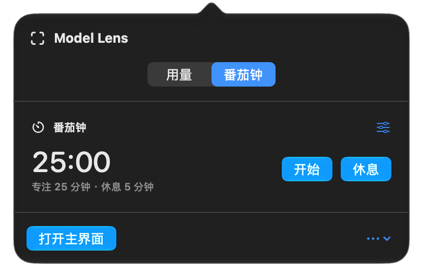

用量与账户
Codex、Antigravity、OpenCode Go、DeepSeek 与 WorkBuddy。按需启用，账户隔离，保留读取时间与来源。
任务模型证据、Agent 用量与番茄钟。
安静待在菜单栏，需要时一目了然。
当前 Release 为 ad-hoc 签名。首次打开可能需要在系统安全设置中确认。

默认没有 Dock 图标和主窗口。原生控件，系统蓝色，内容决定界面大小。
Codex、Antigravity、OpenCode Go、DeepSeek 与 WorkBuddy。按需启用，账户隔离，保留读取时间与来源。
自定义专注与休息，秒级倒计时，暂停恢复。计时与用量互不干扰，休眠后按真实截止时间修正。
区分已记录费用、余额、积分和价格估算。用量仪表盘保留快照，模型证据可本地保存与导出。
明确路由、原始响应模型与模型响应头能够提供可观察证据。记录来源与响应 ID，独立核验区分预热和实际输出。
没有模型字段就保持未确认。安全缓冲候选不是交付模型；本机证据不能证明服务端权重，独立测试也不能代表已有任务。
了解检测边界 →支持字段因平台和版本而异。Antigravity 当前本机接口未提供 Token 总数；DeepSeek Key 提供余额；WorkBuddy 新版加密登录仅提供本机已记录积分消耗后备。缺失信息不推算、不填零。
查看完整支持表 →原生、轻量、透明。让菜单栏多一个实用的小工具。
下载 Codex Model Lens ↓